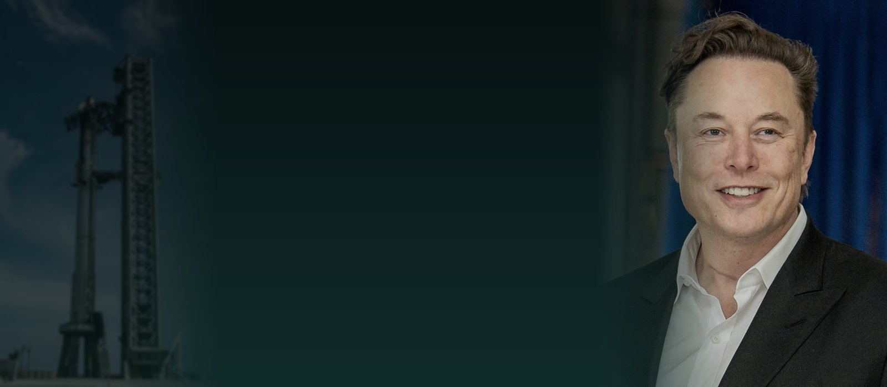

刷屏的“马斯克全球网课”到底是什么？家长先看清这 5 件事
它正式名字叫 Astra Nova，前身是 2014 年马斯克在 SpaceX 园区办的 Ad Astra。两件事要先说清：联合创始人公开表示马斯克与现在的线上学校没有关系；它也不是免费公开课——一门课 2300 美元，2027–28 学年全年学费 4950 至 37125 美元（官方阶梯价）。

结论先行：最近刷屏的“马斯克网校”，正式名称是 Astra Nova，前身是 2014 年马斯克在 SpaceX 加州园区为子女和员工子女办的线下学校 Ad Astra；2020 年线下校区关闭后，原班团队把教学搬到线上并独立运营。有两件事必须先说清：它的联合创始人公开表示“马斯克与现在这所线上学校没有关系”；它也不是免费公开课——按官网公布的价格，一门课约 2300 美元，2027–28 学年全年学费按每周课时从 4950 美元到 37125 美元不等。值得看的是它的方法，不是它的价格。
一、它到底是什么：一条时间线
- 2014 年：Ad Astra 在 SpaceX 位于加州霍桑的园区成立，最初只服务马斯克的子女和 SpaceX 员工的孩子，规模刻意做小。
- 2020 年：马斯克的孩子毕业，线下校区关闭；原团队把课程逻辑搬到线上，更名 Astra Nova，成为独立的非营利机构（美国 501(c)(3)），官网标注 WASC 认证。
- 2026 年 8 月：开设高中部（14–18 岁），与原有初中部（11–14 岁）并行，开始面向全球招生。
- 现在：初中部约 315 名学生，来自 45 个国家；一学年分三个学期，每年约 250 门不同的课，当前学期开出 94 门。
所以它不是“马斯克亲自讲课”，也不是 SpaceX 官方教育项目，而是一所由原团队独立运营的线上学校，延续了 Ad Astra 时期的那套方法。
二、它到底怎么上课
- 全英文、Zoom 直播、小班：每节课 60 分钟，班额一般 6–16 人，一天设 7 个课时段，学生自己选时段。
- 不按年龄分班：没有固定班级，按课程选，混合年龄同堂；学生每周通常上 4–16 课时。
- 课程每年重做一遍：官方说法是“每年从第一性原理重新设计”，三个学期各出一批新课，去年上过的课今年不一定还有。
- 老师多是从业者：官网写明教师多为各领域“正在一线工作的人”，媒体报道提到师资背景有 NASA 工程师、MIT 博士、AI 研究员一类。
- 招牌是“没有标准答案”的思辨题：Conundrums 系列开放问题贯穿教学，考的是推理链条和价值排序，不是知识存量。
国内媒体曾报道一位 13 岁、住北京的女生，为了配合时差，凌晨四点半开始上课，这是她在 Astra Nova 的第三年。她的反馈高频词是“好玩儿”——这一点比任何宣传语都值得琢磨。
三、申请不看分数，但看什么
官网的申请流程只有三步，而且不收申请费：
- 看官网的开放题（Conundrum），用英文录一段 30 秒到 2 分钟的回答视频，展示推理过程而不是结论。
- 家长写一封不超过一页的“家长信”，说明希望孩子在这所学校获得什么。
- 通过初筛后参加小组面试，最后给结果。据官网说明，通常约一半申请者进入下一轮。
注意它没有要求的东西：成绩单、竞赛奖状、推荐信。这一条对国内家长冲击最大——它筛选的不是“已经拿到多少证书”，而是“面对没有答案的问题时怎么想”。
四、费用：说清楚，别被“免费”带偏
官网 2027–28 学年（2027 年 8 月 25 日开学）的学费按每周课时阶梯收取：
- 每周 2 课时：4950 美元／年
- 3–4 课时：9900 美元
- 5–7 课时：14850 美元
- 8–11 课时：24750 美元
- 12–15 课时：32175 美元
- 16 课时以上：37125 美元
另外两点：官网说明学校是“需求无关（need-blind）”并承诺 100% 满足经核实的家庭经济需求，助学金通过第三方平台 Clarity 申请；但线下集训与差旅费用不含在学费内。数学课每周上 4 次，按 4 个课时计算——这一点对算总价影响不小。
五、争议：它并不适合大多数家庭
这所学校从建校起就在被讨论，家长需要知道两边的声音：
- 学界质疑：伦敦大学学院两位学者 2026 年在《英国教育社会学杂志》上分析认为，它看似“唯才是举”的选拔，实际筛选并固化的是原本就拥有丰富文化资本的家庭，高学费加非本土学历路径，让它更像一种精英身份信号。
- 智库定位：美国福特汉姆研究所的说法更直接——作为条件优越家庭的补充性课程可以，但不宜推广为面向大众的主流教育。
- 现实局限：纯线上，同学之间的社交主要发生在课堂里；它无法替代国内升学路径所需的学籍、考试与文凭。校长本人也公开说过，这套模式“不是可规模化的方案”。
换句话说：它是一所好观察的样本，不是一条可复制的升学路径。
六、真正能“抄走”的三条
对天津的家长来说，这所学校的价格抄不走，但方法可以：
- 用开放问题替代标准答案。不给孩子“照着做”的图纸，给目标和约束，让他自己想方案。判断标准很简单：一节课结束，全班作品是不是长得一样。
- 让“做过事的人”带孩子做事。教学内容最好来自真实任务，而不是教材上的例题。孩子需要知道“这东西做出来是干什么用的”。
- 每件事都要有可交付的成果。一间教室、一本书、一台能跑的小车都算。没有成果的学习，孩子无法判断自己到底会不会。
七、我们这边怎么落地
乐之疆做的是本地化的版本：线下、动手、小班、项目制。六个方向里，齿轮机械与动力搭建、智能机器人与机械手编程、创客电子与硬件实验这三条，本质就是“给任务、不给图纸”；孩子做出来的作品各不相同，错了要自己调试。小班 2–4 人，老师能在孩子卡住的那几分钟里问一句“你打算怎么改”，而不是直接给答案。
课时是固定的：小学三年级以下 60 分钟／次，三年级以上 120 分钟／次，一周 1 次。上课器材由校区提供，学员参赛所用的中鸣器材也由学校配备，家长不需要自己买。
我们不做的事也说清楚：不承诺“包获奖”“包升学”，也不建议家长为了追某个模式让孩子脱离本地学籍体系。
再补一层：这条路上数学不是配合科目，而是必需品。齿轮比算错，车快得失控；轮子周长估错，走不到终点；转弯角度差 5 度，跑三米就撞墙。孩子为了「让东西听话」会主动去算——这比在练习册上做十道应用题更容易建立「数学有用」的直觉。
八、下一步
如果你看完对“开放任务式课堂”好奇，最省事的验证方式是带孩子来上一节体验课，看他在没有标准答案时的反应：是自己在试，还是等着别人给步骤。这个反应比任何课程介绍都说明问题。
资料来源：Astra Nova 官网学校概况、课程与学费页（2026 年 11 月访问）；红星新闻、澎湃新闻 2026 年 11 月 3 日报道；投资界 2026 年 11 月 5 日文章。文中引用的学费、班额、申请流程以官网当期公布为准。
题图：马斯克肖像由美国空军学院拍摄（公有领域）；背景为 SpaceX Starship 发射台（Jenny Hautmann，CC BY-SA 4.0）。
想了解这节课适不适合孩子？
校区在天津市河西区大沽南路 459 号下瓦房晶采大厦写字楼四楼，09:00–19:00 可到访，也可在线预约体验课。